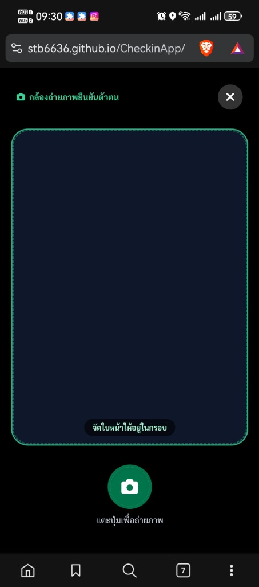

ระบบลงเวลาปฏิบัติราชการ (FLOW_PHOTO_01, FLOW_CHECKIN_01)

โมดอลยังเปิดอยู่ แต่ช่อง Viewfinder กลายเป็นสีดำสนิท เพราะ MediaStream ถูกตัด
เกิดจาก CheckinController:1720 ตรวจพบ video.srcObject === null จึงแสดง SweetAlert
ใน CheckinController:179 รัน setInterval(..., 5000) เพื่อดึง settings และเรียก #applySettingsHotReload() ทุก 5 วินาที
ใน #applySettingsHotReload หากยังไม่บันทึกภาพ จะเรียก #stopCameraAndShowStandby() สั่ง track.stop() และเคลียร์ srcObject = null ในขณะที่ผู้ใช้กำลังส่องกล้อง!
เมื่อเปิดกล้องบนมือถือ หรืออนุญาตสิทธิ์กล้อง เบราว์เซอร์จะสลับโฟกัส ทำให้เกิดอีเวนต์ visibilitychange ซึ่งเรียก hot-reload สั่งตัดสตรีมทันทีที่เปิดกล้อง
หาก this.isCameraRunning === true หรือโมดอล #modalFullscreenCamera ยังเปิดอยู่ ระบบจะไม่อนุญาตให้ Background Timer หรือ VisibilityChange สั่งหยุด MediaStream เป็นอันขาด
ใน #syncSettingsHotReload() เปรียบเทียบค่าการตั้งค่าใหม่ หากไม่มีอะไรเปลี่ยนแปลง จะไม่เรียกคำสั่ง re-render หรือรีเซ็ต UI ใดๆ
สั่งเริ่มเล่นวิดีโอทันทีด้วย await video.play().catch(...) เพื่อป้องกันอาการวิดีโอค้างบน Brave/Chromium มือถือ และเพิ่ม fallback constraints เมื่อฮาร์ดแวร์ไม่รองรับขนาด 720x960
CheckinController.js
node ./.ai_map/vscode_ast_mapper.mjs ปั๊ม buildId ใหม่และซิงค์ทั้ง 8 หน้า
node --check ผ่าน 100% ปราศจากข้อผิดพลาด
git diff main ยืนยันความเข้ากันได้ 100%